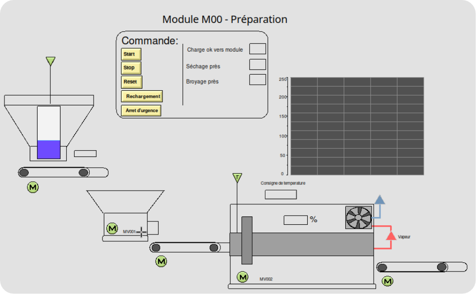
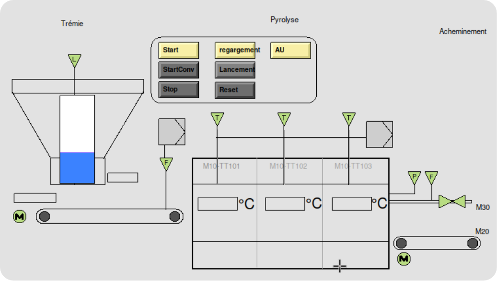
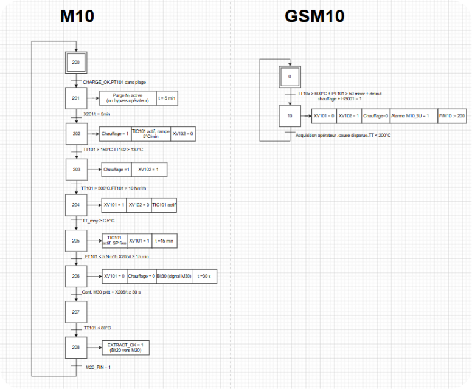
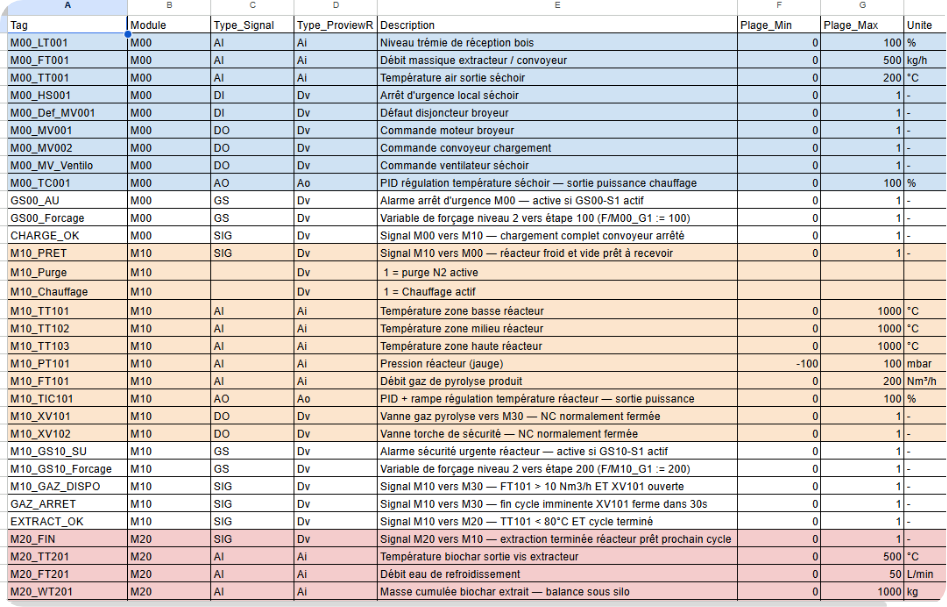

SG ENERGIES · AVRIL–JUIN 2026
Stage automaticien
Participation à la configuration de logiques de contrôle, de boucles de régulation et de synoptiques IHM pour un simulateur de procédé.

01 — Contexte
Stage d’automaticien chez SG ENERGIES du 7 avril au 30 juin 2026. Les activités décrites dans le CV concernent la configuration et la validation d’un simulateur de procédé en collaboration avec l’équipe ingénierie.
02 — Activités réalisées
- Analyse des schémas de procédés (P&ID).
- Paramétrage des bases de données d’entrées/sorties virtuelles.
- Implémentation de logiques de contrôle et de boucles de régulation.
- Création de synoptiques graphiques IHM pour piloter la simulation.
- Validation du comportement du simulateur avec l’équipe.
03 — Démarche technique
Les captures et la démonstration présentent les synoptiques, le GRAFCET et les entrées-sorties du simulateur configuré pendant mon stage. J’ai vérifié que ces éléments peuvent être présentés dans mon portfolio.
04 — Preuves du projet



05 — Démonstration vidéo
06 — Compétences mobilisées
Lecture des P&ID, configuration des E/S et logique de contrôle.
Validation du simulateur en collaboration avec l’équipe.
Articulation entre E/S virtuelles, contrôle, régulation et synoptiques IHM.